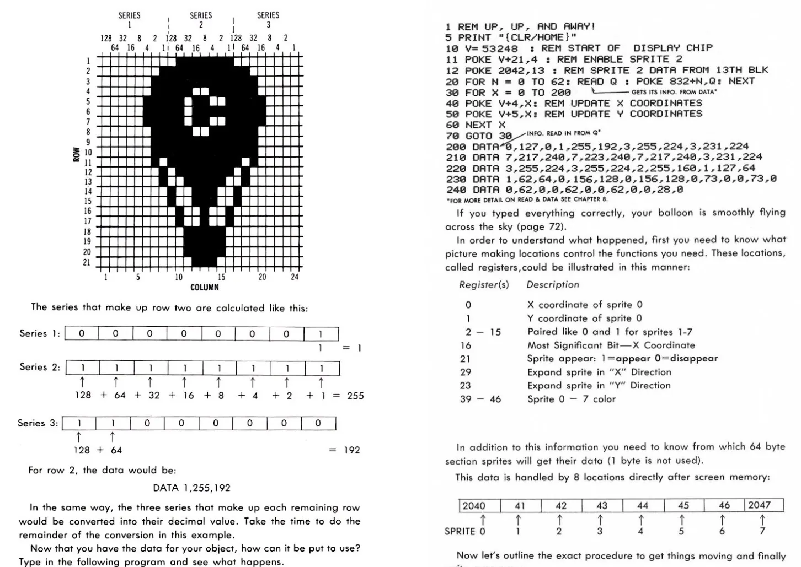
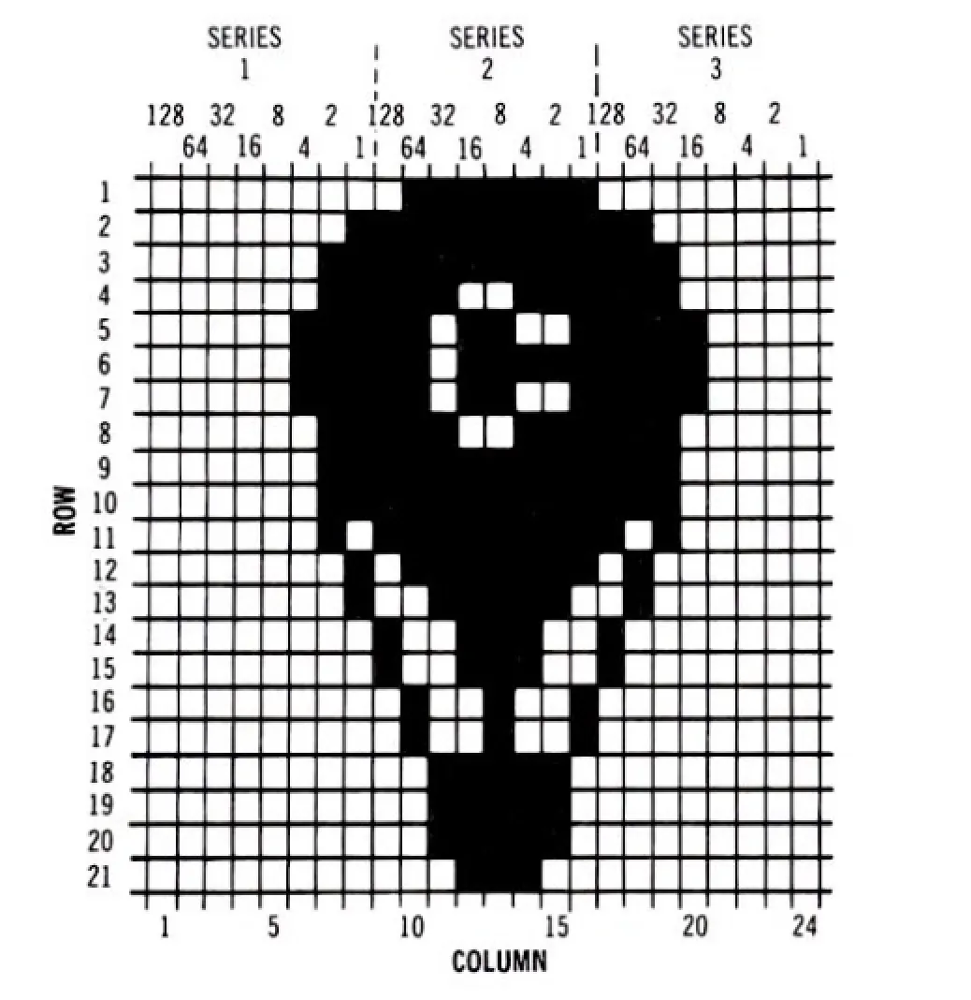

Up, Up and Away
Who remembers this?

One of my defining childhood memories was typing this in (or typing it in together), watching the balloon appear on screen, and seeing it drift across:
Later, the manual introduced a POKE instruction that could even enlarge the little sprite (if you are curious, here is the relevant chapter). Experiencing this 40 years ago felt truly magical. It is almost impossible to explain from today's perspective, where design feels soft and overprocessed everywhere and AI talks back at us, but back then this was graphics.
(At least in Hungary. By the mid-to-late '80s the Amiga 500 had already started showing up, and EGA game graphics were around too, but for us little idiots the C64 remained the computer for years.)
Back then it felt like no other machine was needed. Why would you need one, when typing a few lines could put an "un-eraseable" hot-air balloon on your screen?
I do not have any tattoos, but if I ever get one, this is exactly what I would want to wear:

An unbelievable piece. I was inside that 21x24 "hires" sprite pixel grid, written into memory with POKE instructions, with READ-DATA pairs, with the RUN command, the un-eraseable sprite on the screen, on that dirty little monitor that we could never calibrate to the right colors.
That was entirely me: light-blue balloon sprite on a blue background. I watched it for hours as it went down awkwardly, then jumped back to the start. Nothing else was ever that carefree. Never.
The best graphics in the world.
On the best computer in the world.
Originally published in Hungarian on Plastik media, June 14, 2024.